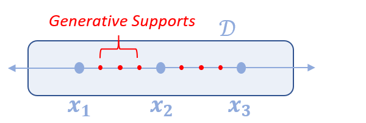

Measure Operators
A guide for measure operators in InfiniteOpt. See the respective technical manual for more details.
Overview
Measure operators are objects that capture the evaluation of an expression with respect to parameters, which is a distinct feature of optimization problems with infinite decision spaces. In dynamic optimization measures can represent integral terms such as the total cost over time, and in stochastic optimization measures can represent integrals over the uncertain parameters, such as expectations. In InfiniteOpt, measures are general operators that can be uni-variate or multi-variate. Natively we employ measure abstractions that employ discretization schemes, which evaluate the expression at a set of points over the parameter space and approximates the measures based on the expression values at these points. However, we support the use of alternative measure operator paradigms.
Basic Usage
First, we consider a dynamic optimization problem with the time parameter t from 0 to 10. We also consider a state variable y(t) and a control variable u(t) that are parameterized by t:
julia> @infinite_parameter(model, t in [0, 10], supports = [0, 5, 10])
t
julia> @variable(model, y, Infinite(t))
y(t)
julia> @variable(model, u, Infinite(t))
u(t)Now suppose we want to evaluate the integral $\int_{2}^{8}y(t)^2 + u(t)^2 dt$. We can construct a measure to represent this integral using the integral function
julia> mref1 = integral(y^2 + u^2, t, 2, 8)
∫{t ∈ [2, 8]}[y(t)² + u(t)²]The four positional arguments of integral are the integrand expression, the parameter of integration, the lower bound, and the upper bound, respectively. Specifying the integrand expression and the parameter of integration is required. If the lower and upper bounds are not specified, then the integration will be over the entire domain, which is $[0, 10]$ in this case.
The integral function uses trapezoid rule as the default discretization scheme for univariate parameters in finite IntervalDomains. In addition, the user can also use quadrature methods for univariate parameters in all IntervalDomains by setting the keyword argument eval_method as Quadrature():
julia> mref2 = integral(y^2 + u^2, t, eval_method = Quadrature())
∫{t ∈ [0, 10]}[y(t)² + u(t)²]The integral function also allows for specifying other keyword arguments that correspond to the chosen evaluation method. For example, when using FEGaussLobatto as the evaluation method we can specify the number of discretization points per finite element via num_nodes.
julia> mref3 = ∫(y^2 + u^2, t, eval_method = FEGaussLobatto(), num_nodes = 3)
∫{t ∈ [0, 10]}[y(t)² + u(t)²]Notice here how we used ∫ in place of integral as a convenient wrapper.
Two other explicit measure type methods include expect for expectations and support_sum for summing an expression over the support points of selected infinite parameters. The syntax for these is analogous to that of integral except that there are no lower/upper bounds. For example, we can define the following expectation of a random expression:
julia> m = InfiniteModel();
julia> @infinite_parameter(m, ξ ~ Normal(), num_supports = 100);
julia> @variable(m, x, Infinite(ξ));
julia> expect_x = expect(x^2, ξ)
𝔼{ξ}[x(ξ)²]For integrals, expectations, and support sums involving moderate to large expressions, the macro versions @integral, @expect, and @support_sum should be used instead of their functional equivalents for better performance.
Other measure paradigms can be implemented via measure as described in the sections further below.
Depending on the type of measures created, support points may be generated at the time of creating the measures. In these cases, the new support points will be added to the support list of the integrated parameter.
Once a measure is created, the evaluation of that measure is stored in a measure data object. Users can query the measure data object using the measure_data function as follows
julia> meas_data = measure_data(mref2);Natively in InfiniteOpt, two types of measure data objects are used to store the measure data information depending on the nature of the measures created: DiscreteMeasureData and FunctionalDiscreteMeasureData. For more details on the measure data object, refer to Measure Data Generation.
Similarly, one can also query the expression the measure operates on using measure_function:
julia> measure_function(mref3)
y(t)² + u(t)²In addition to eval_method, the integral function also accepts weight_func as keyword argument, which dictates the weight function of the measure. Now suppose we want to create multiple measures that share the same keyword argument values that are different from the defaults. We don't have to input the keyword argument values every time we construct a new measure. Instead, we can modify the default values of measure keyword arguments, and construct measures using the new default values. To do that, we use the functions set_uni_integral_defaults and set_multi_integral_defaults. We can in turn reset these via clear_uni_integral_defaults and clear_multi_integral_defaults. Adding new keyword arguments will be useful if users want to extend the measure functions with their custom representation/evaluation schemes that need to take additional arguments somehow. See Extensions for more details.
We can also use the pdf keyword argument for [expect] over interval domains which allows us to specify the density function we would like to use.
Now we can add measures to the constraints and objective functions in our model. For more detailed information, please review the information below.
Theoretical Abstraction
In InfiniteOpt, measures denote operators $M_\ell$ that operate on some infinite expression $y$ over the infinite domain $\mathcal{D}_\ell$ associated with the infinite parameter $\ell$:
\[M_{\ell}y : \mathcal{D}_{-\ell} \mapsto \mathbb{R}^{n_y}\]
Such a paradigm can capture a wide variety of mathematical operators commonly encountered in infinite-dimensional programming such as integrals, expectations, risk measures, and chance constraints.
Currently, InfiniteOpt natively contains programmatic objects for measures that can be represented as integrals of the form:
\[\int_{\tau \in \mathcal{T}} f(\tau)w(\tau) d\tau\]
where $\tau$ is a (possibly multivariate) infinite parameter, $f(\tau)$ is an expression parameterized by $\tau$, $w(\tau)$ is a weight function, and $\mathcal{T}$ is a subset of the domain of $\tau$. The measures approximate the integrals by taking a discretization scheme
\[\int_{\tau \in \mathcal{T}} f(\tau)w(\tau) d\tau \approx \sum_{i=1}^N \alpha_i f(\tau_i) w(\tau_i)\]
where $\tau_i$ are the grid points where the expression $f(\tau)$ is evaluated, and $N$ is the total number of points taken.
This is the abstraction behind both DiscreteMeasureData and FunctionalDiscreteMeasureData which are the native measure data types in InfiniteOpt. The Measure Data Generation section below details how these can be implemented to enable schemes that fit this mathematical paradigm, but lie out of the realm of the supported features behind integral, expect, and support_sum.
More complex measure paradigms can also be implemented by creating concrete subtype of AbstractMeasureData as detailed in Measure Data Section on our extensions page.
Measure Data Generation
The general measure function takes two arguments: the argument expression and a measure data object that contains the details of the measure representation. Measure data objects can be constructed using DiscreteMeasureData, where the parameter of integration, the coefficients $\alpha_i$, and the support points need to be defined explicitly. For example, if we want to evaluate a function at each integer time point between 0 and 10, we can construct the following measure data object to record this discretization scheme:
julia> md_t = DiscreteMeasureData(t, ones(10), [i for i in 1:10]);The arguments of DiscreteMeasureData are parameter, coefficients, and supports. The default weight function is $w(\tau) = 1$ for any $\tau$, which can be overwritten by the keyword argument weight_function. The weight_function should take a function that returns a number for any value that is well defined for the integrated infinite parameter. The data type is DiscreteMeasureData, which is a subtype of the abstract data type AbstractMeasureData.
With DiscreteMeasureData, a measure can be generated in a custom and quick manner. For example, using the measure data above, we can define a measure for $y^2$ as follows:
julia> mref = measure(y^2, md_t)
measure{t}[y(t)²]In the same way, we can define measure data for multi-variate infinite parameters. For example, we can define a discretization scheme for a 2D position parameter $x \in [0, 1] \times [0, 1]$ as follows:
julia> @infinite_parameter(model, x[1:2] in [0, 1])
2-element Vector{GeneralVariableRef}:
x[1]
x[2]
julia> md_x = DiscreteMeasureData(x, 0.25 * ones(4), [[0.25, 0.25], [0.25, 0.75], [0.75, 0.25], [0.75, 0.75]]);where md_x cuts the domain into four 0.5-by-0.5 squares, and evaluates the integrand on the center of these squares. Note that for multivariate parameters, each support point should be an AbstractArray that stores the value at each dimension.
In addition to the intuitive [DiscreteMeasureData], another type of measure data object is FunctionalDiscreteMeasureData. This type captures measure data where the support points are not known at the time of measure data creation. Instead of storing the specific support and coefficient values, FunctionalDiscreteMeasureData stores the minimum number of supports required for the measure, and a coefficient function that maps supports to coefficients. When the measure is built on a FunctionalDiscreteMeasureData is evaluated (expanded), supports will be generated based on the functions stored in the data object. The method of support generation is recorded as a label in the measure object.
For example, suppose we want to uniformly generate at least 20 Monte Carlo samples over the interval that t is in. A build-in label UniformGrid can be used to signify the use of this method. A FunctionalDiscreteMeasureData can be created as follows:
julia> coeff_f(supports) = [(10 - 0) / length(supports) for i in supports]
coeff_f (generic function with 1 method)
julia> fmd_t = FunctionalDiscreteMeasureData(t, coeff_f, 20, UniformGrid);For more details see FunctionalDiscreteMeasureData.
Our higher-level measure methods, such as integral, do not require explicit construction of the measure data object and instead serve as wrappers that construct the appropriate data object and then call measure.
Evaluation Methods
The integral function calls generate_integral_data under the hood to construct the measure data object. generate_integral_data takes as positional arguments the integrated parameter, lower bound, upper bound, and method, and returns a measure data object of type AbstractMeasureData.
generate_integral_data applies multiple dispatch to encode different support generation methods depending on the input eval_method. Each dispatch is distinguished by the method, which takes a concrete subtype of AbstractIntegralMethod. Each dispatch of generate_integral_data implements the specified method and returns the resulting measure data, which will be used by @integral to create the measure. A table of available method options in our package is listed below. Each method is limited on the dimension of parameter and/or the type of domain that it can apply for. For the details of what each method type means, refer to the corresponding docstrings.
The evaluation method FEGaussLobatto creates finite elements by decomposing over the supports that have been added to the integral parameter and then approximates the integral over each finite element via Lobatto quadrature using num_nodes. All other Gauss quadrature methods do not incorporate any existing supports nor do they decompose the integral into finite elements, but instead generate their quadrature node points over the entire integral domain. See the A Note on Support Management Section for more information. This method will take in the user supports, and create generative supports along each interval and match them with corresponding coefficients. Here is a depiction of such what FEGaussLobatto does.

$\int_{x_1}^{x_3} f(x) dx = \int_{x_1}^{x_2} f(x) dx + \int_{x_2}^{x_3} f(x) dx$
$\approx \sum_{i=1}^{n} \alpha_{a,i} f(\tau_{a,i}) + \sum_{i=1}^{n} \alpha_{b,i} f(\tau_{b,i})$
$= \sum_{i=1}^{n} (\alpha_{a,i} f(\tau_{a,i}) + \alpha_{b,i} f(\tau_{b,i}))$
where $\tau_{a,i}$ and $\tau_{b,i}$ are the discrete nodes for the two intervals
and $\alpha_{a,i}$ and $\alpha_{b,i}$ are the coefficients.
julia> mref_lob = integral(y^2 + u^2, t, num_nodes = 3, eval_method = FEGaussLobatto())
∫{t ∈ [0, 10]}[y(t)² + u(t)²]
julia> expand(mref_lob)
0.8333333333333333 y(0)² + 0.8333333333333333 u(0)² + 3.333333333333333 y(2.5)² + 3.333333333333333 u(2.5)² + 1.6666666666666665 y(5)² + 1.6666666666666665 u(5)² + 3.333333333333333 y(7.5)² + 3.333333333333333 u(7.5)² + 0.8333333333333333 y(10)² + 0.8333333333333333 u(10)²
We set num_nodes = 3 to define the number of nodes (supports) that will be used at each finite element for the integral approximation. Note that this is inclusive of the finite element supports, so the number of generative (internal) supports added to each finite element is num_nodes - 2.
In summary, we natively support trapezoid rule, Gaussian quadrature methods for univariate parameters, and Monte Carlo sampling for both univariate and multivariate infinite parameters. For extension purposes, users may define their own generate_integral_data to encode custom evaluation methods. See Extensions for more details.
A Note on Support Management
There is a difference in how supports are considered using UniTrapezoid()/FEGaussLobatto() vs. the other schemes. Namely, the other schemes will NOT incorporate other supports specified elsewhere in the model. Consider the following example with 3 equidistant supports and an integral objective function that uses UniTrapezoid() (the default):
# Create a model, with one variable and an infinite parameter with a given number of supports
m = InfiniteModel()
@infinite_parameter(m, t in [0, 2], num_supports = 3)
@variable(m, u, Infinite(t))
# Create an objective function with the default trapezoid integration
@objective(m, Min, integral(u^2, t))
# Get the transcribed model to check how the supports are taken into account
build_optimizer_model!(m)
trans_m = optimizer_model(m);If we look at how many supports there are, how the variable u is transcribed, and how the objective function of the transcribed model looks like, we notice that the same supports are used in both the objective function and the transcribed variable:
julia> supports(t)
3-element Vector{Float64}:
0.0
1.0
2.0
julia> transcription_variable(u)
3-element Vector{VariableRef}:
u(support: 1)
u(support: 2)
u(support: 3)
julia> objective_function(trans_m)
0.5 u(support: 1)² + u(support: 2)² + 0.5 u(support: 3)²Thus, the integral incorporates the 3 supports generated outside the integral declaration.
Then we readjust the model to use Gauss-Legendre quadrature via GaussLegendre() that uses 2 quadrature nodes:
# Set the new objective and update the TranscriptionModel
set_objective_function(m, integral(u^2, t, eval_method = GaussLegendre(), num_nodes = 2))
build_optimizer_model!(m)
trans_m = optimizer_model(m);Now let's look again at the number of supports, the transcription of u, and the new objective function:
julia> supports(t)
5-element Vector{Float64}:
0.0
0.42264973081
1.0
1.57735026919
2.0
julia> transcription_variable(u)
5-element Vector{VariableRef}:
u(support: 1)
u(support: 2)
u(support: 3)
u(support: 4)
u(support: 5)
julia> objective_function(trans_m)
u(support: 2)² + u(support: 4)²The supports used in the objective function are different from the supports used in the transcription of u. The integral objective function has been transcribed using the 2 quadrature supports, but does not include the other supports since they cannot be incorporated into the Gaussian quadrature approximation. Whereas, u is defined over all the supports and thus certain realizations of u will be excluded from the objective function which will affect the behavior of the optimization and lead to unexpected results.
However, this behavior is avoided if we let the integral add the supports and not add supports elsewhere (for convenience we'll use set_uni_integral_defaults):
# Define a new model, parameter, and variable
m = InfiniteModel()
@infinite_parameter(m, t in [0, 2])
@variable(m, u, Infinite(t))
# Update the integral default keyword arguments for convenience
set_uni_integral_defaults(eval_method = GaussLegendre(), num_nodes = 2)
# Set the objective with our desired integral
@objective(m, Min, integral(u^2, t))
# Build the transcribed model
build_optimizer_model!(m)
trans_m = optimizer_model(m);Then we get the supports are consistent for u and the integral:
julia> supports(t)
2-element Vector{Float64}:
0.42264973081
1.57735026919
julia> transcription_variable(u)
2-element Vector{VariableRef}:
u(support: 1)
u(support: 2)
julia> objective_function(trans_m)
u(support: 1)² + u(support: 2)²Therefore, using quadratures other than UniTrapezoid() or FEGaussLobatto() requires careful analysis if there are user-defined supports in the problem.
Expansion
In a model, each measure records the integrand expression and an evaluation scheme that details the discretization scheme to approximate the integral. The model will not expand the measures until the transcription stage, at which a JuMP.AbstractJuMPScalar is created for each measure to represent how the measure is modeled in a transcription model based on the stored discretization scheme (see Model Transcription for details on transcription). Additional point variables will be created in the expansion process if the measure is evaluated at infinite parameter points that do not have corresponding point variables yet.
Sometimes for extension purposes, one might want to expand a specific measure before reaching the transcription stage. Alternatively, one might want to use custom reformulation instead of the transcription encoded in this package, in which expanding measures will also be useful. This can be done using the expand function, which takes a MeasureRef object and returns a JuMP.AbstractJuMPScalar based on the AbstractMeasureData. For example, suppose we want to integrate $y^2$ in $t$, with two supports $t = 2.5$ and $t = 7.5$. We can set up and expand this measure as follows:
julia> tdata = DiscreteMeasureData(t, [5, 5], [2.5, 7.5]);
julia> mref4 = measure(y^2, tdata)
measure{t}[y(t)²]
julia> expanded_measure = expand(mref4)
5 y(2.5)² + 5 y(7.5)²
julia> typeof(expanded_measure)
GenericQuadExpr{Float64, GeneralVariableRef}In the expand call, two point variables, y(2.5) and y(7.5), are created because they are not defined in the model before the expand call. One can use the expand_all_measures! function to expand all measures in a model, which simply applies the expand to all measures stored in the model.